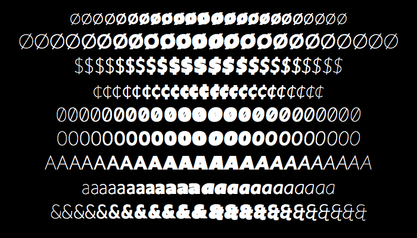

Upgrade styles and axes
[Explaining the workings of interpolation, multiple master axes and variable fonts. There is a number of slides of previous presentations that can be used as illustrations here.]
Gerrit Noordzij’s cube is based on a merger of expansion contrast (sharp-nib pencil) and translation contrast (broad-nib pencil). The type of contrast used in Upgrade is based on translation, with little difference between vertical thick and horizontal thin strokes. The animation (based on software by Just van Rossum’s Daily Drawbot) shows where the contrast principle of Upgrade is located in Noordzij’s cube.
Upgrade styles shown in this example are Light, Book, Regular, Semibold, and Black.
Different drawings for different weights
Depending on the available space of stems and counters in the various weights, some characters have different drawings. There is no room for the vertical bar in the dollar and cent symbols to strike completely through. Note that although all weights are shown here (ranging from Hairline to UltraBlack), details in the extreme weights may not make them ideal candidates for use in this size.
More variations to come in the near future
Soon more variations in the Upgrade family—like Upgrade Condensed, Upgrade Wide, and Upgrade Text—will be released. And these variants will be combined, together with other parametric axes, in Upgrade Var. These are all intended to increase typographic quality for specific usage and size.
Alternative styles, using the Upgrade family as a template
Also planned is a number of variants that cannot easily be expressed in the interpolating axes needed for variable fonts. These variants have a more stylistic approach based on specific usage, where readability is not the first priority. Some projected example names of these non-variable families include Upgrade Round, Upgrade Notouch, Upgrade Logo, Upgrade Ink, and Upgrade Metal.